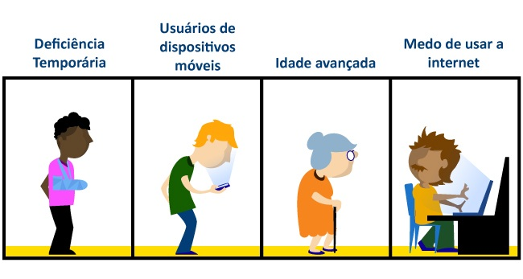

Acessibilidade digital
Sites e aplicativos devem permitir que diferentes pessoas encontrem informações e utilizem seus recursos.
AcessoParaTodos
Acessibilidade e inclusão
A acessibilidade permite que todas as pessoas participem da sociedade com autonomia. Ela envolve espaços físicos, comunicação e acesso à informação.

Uma rampa facilita a entrada em um prédio. Um site bem estruturado permite que uma pessoa cega navegue com um leitor de tela. Nos dois casos, remover barreiras amplia a participação.
Sites e aplicativos devem permitir que diferentes pessoas encontrem informações e utilizem seus recursos.
Ruas, edifícios e transportes devem permitir deslocamentos com segurança e autonomia.
Tecnologia assistiva reúne recursos que ajudam pessoas com deficiência a realizar atividades com maior independência.
A inclusão começa quando reconhecemos as necessidades de outras pessoas e removemos barreiras.
ENAP. eMAG Conteudista: Módulo 1 / Introdução (2016) e Módulo 2 / Web Acessível (2016).